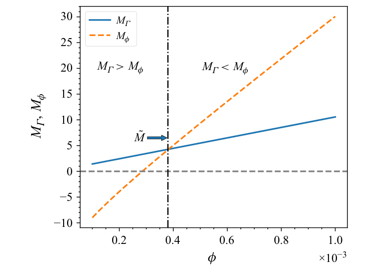

冷基底上的纳米颗粒悬浮层何时会出现热溶质失稳？
线性稳定性模型同时考虑吸附动力学、热扩散和热导率分层，区分了由温度扰动、浓度扰动及两者耦合引起的短波模式。
研究背景
这篇文章研究纳米流体薄层的 Marangoni 不稳定。不同于稀溶液或普通 surfactant 模型，作者考虑“中等浓度”纳米颗粒：黏度、密度、热容、热导率都依赖体相颗粒浓度；颗粒还会在液-气界面吸附/脱附，并使表面张力随体相/界面浓度呈非单调关系。系统设置是底部冷却、上表面可变形、存在重力和 Soret 效应。
核心问题：在这种耦合下，不稳定到底来自体相浓度、界面颗粒浓度、温度，还是它们之间的反馈？尤其是冷却基底通常让热毛细效应稳定界面，但在纳米流体里热导率分层和界面动力学可能改变结论。
研究方法
作者建立薄层框架下的连续介质模型，但保留可变热物性和界面吸附/脱附动力学。体相颗粒通量包括 Brownian diffusion 和 Soret effect；界面颗粒满足吸附、脱附、表面扩散和界面速度耦合。表面张力对温度线性依赖，对颗粒浓度采用含界面能的非单调状态方程。
主要无量纲量包括 Prandtl number、modified Galileo number、Lewis number、surface Lewis number、Biot number B、dimensionless surface tension Sigma_0、Soret coefficient eta、thermal Marangoni number M_T、Elasticity number E、adsorption/desorption ratio K_ad，以及热导率分层参数 a。作者先求 quiescent base state，再对二维 normal modes 做线性稳定性分析，数值求解 EVP，并用 toy problem 给出解析验证。
- Figure 1（模型/几何）：定义纳米流体层、底部热通量、可变形界面、颗粒直径约 50 nm 和界面吸附/脱附。
- Table 1（参数表）：给出本文参数命名和典型值，是复现模型最重要的入口。
具体结果

- 结果 1：表面张力的颗粒浓度响应是非单调的，且体相和界面浓度对应两个不同 solutal Marangoni functions。Figure 2 展示 sigma(phi) 与实验/模型的比较。Figure 3 给出 M_phi 和 M_Gamma 随浓度变化；M_Gamma 在所选范围内为正，M_phi 在低体积分数可为负，说明界面浓度扰动和体相浓度扰动可能竞争或协同。
- 结果 2：基态由 Soret effect 和浓度依赖热物性共同塑造。Figure 4 显示正 Soret coefficient 使颗粒从热界面向冷基底迁移，形成稳定密度分层；phi_0(z) 明显非线性，而温度剖面在较低温差时接近线性。
- 结果 3：纯 solutocapillary instability 在可溶界面动力学下主要是 monotonic short-wave。Figure 5 的中性曲线 E(k) 表明临界波数约 k_c ≈ 6.13，且阈值对 Biot number、Sigma_0、modified Galileo number 的敏感性较弱。Figure 6-7 说明 Soret coefficient eta 总体提高 E_c，即稳定系统；但存在 mode I/mode II 转换区。
- 结果 4：不溶界面颗粒极限会改变波长选择。Figure 12-14 中，令吸附/脱附项有效消失后，界面颗粒类似 insoluble surfactant。此时长波和短波不稳定都可能出现；在冷却基底设定下，M_T > 0 的 thermocapillarity 对这种纯 solutocapillary 模式起稳定作用。
- 结果 5：纳米流体中可出现纯 thermocapillary instability，根源不是普通液体的温度-表面张力耦合，而是热导率分层与界面颗粒动力学的耦合。Figure 15-16 显示温度、体相浓度、界面浓度和流场一起参与；界面颗粒浓度扰动幅度很大，是热毛细不稳定出现的关键中介。
- 结果 6：热-溶质毛细联合作用近似线性叠加。Figure 17 中 M_Tc/M_Tc0 + E_c/E_c0 ≈ 1，说明在所选参数下 solutocapillarity 越强，所需热毛细驱动越小，反之亦然。
- 结果 7：toy problem 解析地确认热导率分层的必要性。Figure 20 显示小 a 时 M_T > 0 稳定；当 a = 7.47 时出现长波热毛细不稳定。Figure 22 显示数值解与解析式吻合到约 O(10^-5)。
关键机制
机制链条可以分成三段：
- 底部冷却 + Soret effect 先建立体相颗粒浓度分层，改变热导率和密度。
- 界面吸附/脱附把体相界面处浓度扰动转成界面颗粒浓度扰动，进而改变表面张力梯度。
- 温度扰动又通过浓度依赖热导率影响热通量，使热毛细应力与溶质毛细应力在某些参数下同向放大。
因此，本文的热毛细不稳定不是普通单组分液体的 Pearson 型不稳定，而是 thermal conductivity stratification + interfacial kinetics 的组合效应。若忽略界面颗粒动力学或把热物性视为常数，主要结论会变。
适用范围与局限
- 这是线性稳定性理论，结论是 onset 和临界模式，不直接给出非线性饱和图案、混合效率或实验可见形貌。
- 参数空间大，许多结论基于代表性参数组合，例如 Phi = 0.01、a = 7.47、B = 0.01、Sigma_0 = 500 等；换材料体系可能改变阈值排序。
- 模型假设纳米颗粒分散稳定，并忽略基底不可逆吸附；真实纳米流体可能有团聚、壁面沉积和界面污染。
- 表面张力状态方程和吸附/脱附参数来自理论估计及文献拟合，实验验证仍是薄弱环节。